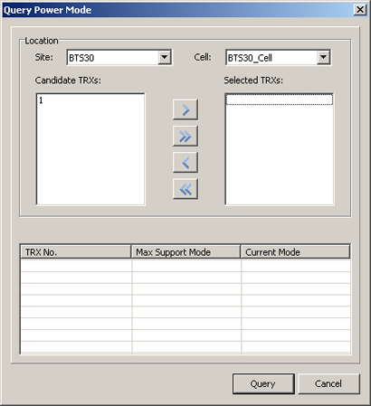
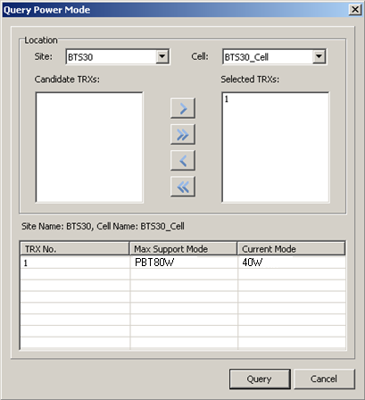

This describes how to query the current power mode and the maximum power mode of TRXs.
Prerequisites
- The LMT runs normally.
- The communication between the LMT and the BSC is normal.
- The communication between the BSC and the BTS is normal.
Procedure
- Through GUI
- Choose . A dialog box is displayed, as shown in Figure 1.
Figure 1 Query Power Mode dialog box
- Set the parameters in the Location area. Select the TRXs in the Candidate TRXs box and add them to the Selected TRXs box. Click Query. The results are displayed in the lower area, as shown in Figure 2.
Figure 2 Querying the power mode
- Through MML
- Run the DSP TRXPWM command on the Local Maintenance Terminal to query the TRX power mode.
Copyright © Huawei Technologies Co., Ltd.